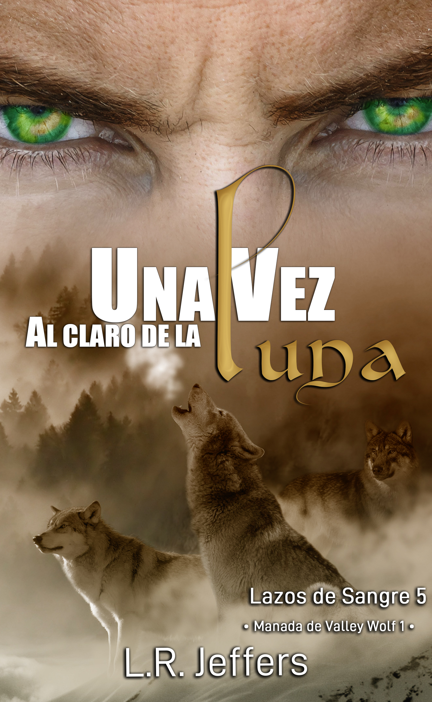

Una vez al claro de la luna
«Cuando el vínculo se rompe, solo el amor verdadero puede sanarlo.»
También disponible en formato digital y papel.
Sinopsis
Denahi Tsosie, el Alfa de la manada Valley Wolf, ha esperado décadas por su compañero verdadero. Cuando finalmente lo encuentra, no es lo que esperaba, sino exactamente lo que necesita: Ezra Weissenberg, un Beta letal, Asesino de la manada Crimson Lake y un hombre marcado por un pasado de tortura y dolor.
A pesar de las heridas de Ezra y la oposición del Consejo, la conexión entre ambos es innegable e inquebrantable. Juntos, comienzan a sanar viejas cicatrices y a construir un futuro. Pero en Valley Wolf, la traición se esconde donde menos se espera.
Una emboscada brutal con acónito y plata deja a Denahi al borde de la muerte. Cuando despierta, el hombre que amaba a Ezra ha desaparecido. En su lugar, hay un Alfa frío que no lo recuerda, que lo mira con desprecio y que ha traído de vuelta a la mujer que una vez destruyó su vida.
Degradado de Compañero a un simple extraño en su propio hogar, Ezra deberá enfrentar su batalla más dura: ver al único hombre que ha amado convertirse en el monstruo que juró no ser.
¿Podrá Denahi recordar a su compañero antes de destruir el vínculo para siempre? ¿O se cansará Ezra de luchar por un amor que solo le causa Agonía?
💡 Esta novela inicia un nuevo arco (Manada de Valley Wolf) y se puede leer de forma independiente, aunque se disfruta más si conoces el universo de Crimson Lake.
Leer extracto gratuito
Capítulo 2
…El Alfa continuaba mirándolo y le sonrió. El estómago de Ezra se contrajo en un puño. ¿Por qué le afectaba tanto? Todo lo que su cuerpo deseaba era correr hacia el hombre y hacerle todo tipo de cosas indecentes.
—Al fin te he encontrado, bebé.
«Espera, ¿él realmente nos dijo "bebé"?», se quejó su lobo. «Voy a mostrarle qué clase de "bebé" de mierda soy».
Rhys le gruñó al otro Alfa, apretando los puños, preparándose para una confrontación.
—Alfa Tsosie, ¿qué-mierda-está-pasando? ¿Estás coqueteándole a mi compañero? ¿Sabes lo que significa?
Con que ese era su apellido. Algo hizo clic dentro de su cabeza. ¿Su compañero era Denahi Tsosie, el Alfa de Valley Wolf? Oh, hombre, él estaba jodido en más de un sentido. La reputación de Denahi era casi tan impresionante como la de Rhys, y él era mucho más viejo.
Se convertiría en la puta del Rey Pardo. Genial, simplemente maravilloso.
Arian apretó el brazo de Rhys, pidiéndole que se calmara. Denahi sacudió la cabeza, negando.
—No, tu pareja no —señaló con la barbilla detrás de Arian—. Él.
Todas las cabezas se volvieron hacia él y Ezra ya no pudo ocultarlo.
—¿Agony? —Rhys no pudo esconder la sorpresa en su voz.
Denahi ignoró por completo a Rhys, dirigiéndose hacia Ezra. Se detuvo a dos pasos y habló:
—¿Cuál es tu nombre? No el que usa tu manada.
Él vaciló. ¿Sería una buena idea darle su nombre humano? Aunque no lo utilizase a menudo, aún era especial para él. Le recordaba lo único bueno que había tenido en la vida. Sentía que, de algún modo, le daba poder a Denahi sobre su persona.
—Ezra —dijo, y su voz salió afectada.
—Ezra —Denahi repitió, como acariciando cada sílaba—. ¿Me reconoces?
Ezra tragó duro, casi intimidado, incapaz de quitar los ojos de Denahi. Su pecho subía y bajaba rápidamente y una gota de sudor se deslizó desde su sien hasta el cuello.
Él no era un cobarde, no se asustaba tan fácilmente, y aun así había algo en su compañero que le ponía los pelos de punta. Eso, además de que su piel había comenzado a hormiguear, sintiéndose caliente, y él deseaba…
«Es fuerte», se quejó su lobo. «Puedo verlo. Es una mierda impresionante y quiere someterme».
—¿Me reconoces? —el tono Alfa de Denahi resonó en la sala, asustando al hijo de Arian.
Eoghan era un niño rubio de ojos platinados al que el Alfa y su compañero adoptaron después de que llegase a la manada, herido y asustado. Era un pequeño dulce e impresionable al que tenía órdenes de cuidar. Que Denahi lo aterrase como estaba haciéndolo, solo despertó la furia de Ezra.
Ningún pequeño niño debía tener miedo. Nunca.
—¿Me reconoces tú? —preguntó, retándolo.
El Alfa Tsosie abrió los ojos más de lo normal, y Ezra permaneció rígido, quieto. Miró al hombre de arriba abajo y respiró profundo, midiendo la fuerza de Denahi, preparándose mentalmente para una confrontación.
Denahi dio un paso más hacia él y Ozara se preparó para frenarlo, pero Ezra alzó la mano, deteniéndolo. Aunque solía pelear siempre junto a su hermano mayor, esta sería solo su batalla. Ezra levantó el labio, mostrando sus colmillos, y le gruñó bajo. Arian empujó a Eoghan detrás de su cuerpo en el instante en que Denahi se lo devolvió, más alto y fuerte. Peligroso.
La testosterona pululaba por el lugar, volviendo el aire casi tóxico.
Ezra gruñó de nuevo, Denahi también, mientras acortaba la distancia entre ellos hasta que sus narices casi se rozaron. Ezra no se intimidó, pese a la demostración silenciosa de fuerza y supremacía. Lanzó el primer golpe; Denahi lo atajó. Doblando el brazo de Ezra detrás de su espalda, lo inmovilizó contra su pecho. Aun así, él no se detuvo. Era un Beta y un Asesino; aún más: él era muerte y dolor, Agony. Nadie lo sometería. Gruñendo y moviéndose como un lobo rabioso, trató de liberarse; Denahi no lo soltó.
El Alfa era tan fuerte como Ozara, y maldita fuera su existencia por eso.
—Sométete a tu lobo, compañero —dijo Denahi en su oreja. La voz le salió rasposa y excitada.
Ezra sacudió la cabeza, negando, resistiéndose todavía a ceder. Él no quería hacerlo, pero tener a Denahi tan cerca comenzaba a excitarlo y su fuerza se desvanecía poco a poco.
«¡Ayúdame!», le pidió a su lobo.
Él estaba quieto, mirando a través de sus ojos hacia el exterior.
«No puedo», susurró con vergüenza. «Es más fuerte que yo. No puedo… no quiero rechazarlo tampoco».
Ezra estuvo a punto de gimotear como un cachorrito.
«Mierda, no me digas eso».
Su lobo apenas levantó la mirada.
«Estás por tu cuenta, lo lamento».
—Sométete —volvió a susurrarle Denahi.
—Solo me someto ante mi Alfa, y ese no eres tú.
Denahi gruñó, metiendo la cálida y áspera mano dentro de su camisa. Ezra apretó los dientes para no gemir. ¿Qué, pensaba tomarlo delante de todos en la sala? Tenía que ser una maldita broma, pero a juzgar por lo que había en los pantalones de Denahi…
—Yo soy tu Alfa —lo apretó contra sí mismo, frotándose contra él—. ¿Me reconoces?
Dios, ese era un pene muy grande el que estaba sintiendo contra sus nalgas.
«Acéptalo», suspiró su lobo. «Él no va a rendirse. Solo no dejes que te tenga».
Bueno, infiernos, eso sería un poco difícil. Si se sometía, estaba diciéndole al Alfa que podía tomarlo como quisiera y él no estaba preparado para eso.
Ezra miró con ojos desesperados a Rhys; él asintió. Solo en ese instante el Beta dejó de forcejear. Si su verdadero Alfa estaba aprobándolo, entonces él debía ceder.
—Te reconozco —dijo.
Denahi lo dejó ir. Ezra se giró hacia él, tragó duro y apretó los párpados. Inclinó la cabeza hacia atrás, dejando al descubierto su garganta, no solo en un gesto de sumisión, sino ofreciéndole su vida. Denahi podía tomarla debido a su ofensa; no lo hizo. En su lugar, extendió la mano hacia él; los dedos de Denahi temblaban cuando acariciaron la piel de Ezra y él volvió a estremecerse mientras un gemido bajo salía de su garganta.
💡 Este extracto representa aproximadamente el 10% del libro. Para continuar la historia, disponible en Amazon.
Contenido exclusivo
Estamos reescribiendo Una vez al claro de la luna para ofrecerte la mejor experiencia. Cuando la nueva versión esté lista, añadiremos aquí:
- ✨ Ficha detallada de Ezra "Agony" y Denahi
- 🎵 Playlist oficial de la historia
- 🎁 Escena eliminada o POV alternativo
¿Quieres ser el primero en saber cuándo está listo? Únete al Círculo Oscuro.